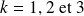
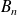

Sujet PSI 2015-61 : Arithmétique / corrigé complet
Le sujet est téléchargeable ci-dessous.
Le corrigé des questions mathématiques est de Cédric Faure, et les indices aussi ! Merci à lui.
Pour tout
 de
de
 , on note
le nombre de chiffres dans l'écriture de
en base 10. Par exemple :
,
,
,
, on note
le nombre de chiffres dans l'écriture de
en base 10. Par exemple :
,
,
,
 ,
.
,
.
Question
1. Un entier
 dans
étant donné, combien y-a-t-il d'entiers
dans
étant donné, combien y-a-t-il d'entiers
 tels que
?
tels que
?
ssi . Il y a donc tels entiers.
Question
2. a. Écrire une fonction permettant de calculer
. Tester avec
 .
.
Deux versions de cette fonction sont envisageables, une convertissant le nombre en chaîne de caractères, et l'autre numérique.
def c(n):
return( len(str(n)) )
def c(n):
return( int(m.log10(n) + 1) )
Dans les deux cas bien sûr, cela donne le résultat suivant.
>>> c(m.factorial(100))
158Question
2. b. Écrire une fonction Couples(k) permettant de compter le nombre de couples
d'entiers à
chiffres tels que le produit
comporte
 chiffres.
chiffres.
Dans la logique du sujet, un algorithme de complexité
 est recevable sachant qu'à la question suivante, on ne vous demande de le tester que pour
.
est recevable sachant qu'à la question suivante, on ne vous demande de le tester que pour
.
def Couples(k):
res = 0
for a in range( int(pow(10, k - 1)), (int(pow(10, k)) - 1) + 1 ):
for b in range( int(pow(10, k - 1)), (int(pow(10, k)) - 1) + 1 ):
if c(a * b) >= k :
res += 1
return(res)
Question
2. c. Pour  , calculer .
>>> for k in range(1, 4):
... print('Couples(', k, ')/(81 x 10^(2k - 2)) = ', \
... Couples(k) / (81 * pow(10, 2 * k - 2)))
... ... Couples( 1 )/(81 x 10^(2k - 2)) = 1.0
Couples( 2 )/(81 x 10^(2k - 2)) = 1.0
Couples( 3 )/(81 x 10^(2k - 2)) = 1.0
On note
, la probabilité pour que deux nombres entiers à
chiffres choisis indépendamment, aient un produit ayant
chiffres.
Question
3. a. Exprimer
l'aide de la fonction Couples(n).
 (le dénominateur est le nombre total de couples d'entiers à
chiffres).
(le dénominateur est le nombre total de couples d'entiers à
chiffres).
Question
3. b. On note
la partie entière d'un réel
 . Montrer que
. Montrer que
.
Fixer un entier
à
chiffres, et compter le nombre d'entiers
à
chiffres tels que
contienne
chiffres.
Soient
et
deux entiers à
chiffres. Alors
contient forcément au plus
chiffres.
contient exactement chiffres ssi ssi .
Les
qui ne conviennent pas sont donc ceux vérifiant
, i.e.
.
On a de plus la condition
 . À
fixé, il y a donc
entiers
qui ne conviennent pas.
. À
fixé, il y a donc
entiers
qui ne conviennent pas.
Le nombre total de couples d'entiers à
chiffres dont le produit n'a pas
chiffres est donc
, d'où la formule cherchée.
Question

Question
4. b. D2terminer un équivalent de en l'infini.
On encadre
entre
et
, puis
entre
et
.
Les calculs sont un peu longs à écrire, mais on arrive à encadrer  entre deux intégrales que l'on sait calculer, et qui sont toutes les deux équivalentes à .
On pourra comparer à une intégrale.
Question
4. c. En déduire que la suite est convergente.
Déterminer sa limite ; en donner une valeur approchée décimale raisonnable.
.
Par les équivalents obtenus, converge vers .